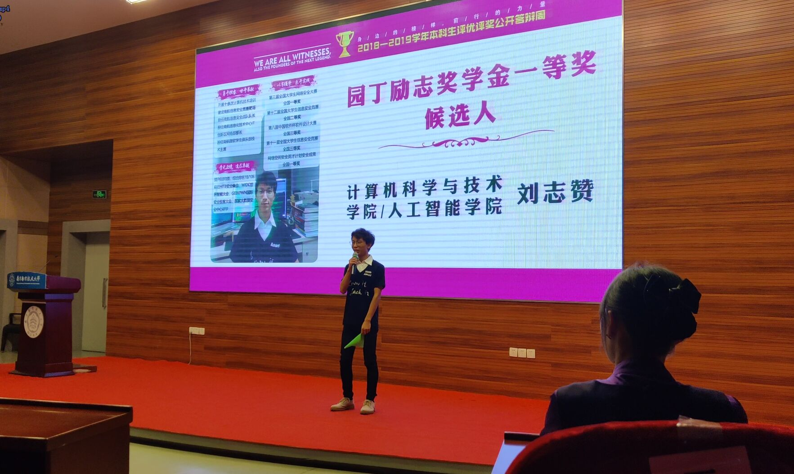

因为感觉自己上台的机会蛮多的，就完全脱稿了，不过还好也没翻车
不过呢，我心里比较郁闷的是感觉自己有点违心了，说了一些我不喜欢说的话，但是老师们喜欢的，不过还好答辩结束后一个小姐姐回了我一句，很不错很有个性
我觉得在台上，还是脱稿好一些，因为观众也不知道你想说什么，如果不脱稿会太在意稿子，完全就是对着稿子念了
刘导、大一杨导给我改ppt幸苦了
在正式答辩前，在导员办公室还专门排练了一次
稿子改来改去也就变成了这个样子,虽然有点违心，但是不得不说，导员还是导员，改了改还是挺新颖的
1、开头自我介绍/以及开场
各位老师，同学们大家好，我是计算机学院软件工程卓越班的刘志赞。准备答辩时想了很久，我到底分享些什么呢？正犯愁的时候看到了桌面上的小旗子，灵光一闪，不如我就讲讲我和这面旗子的故事，在信息安全竞赛中每写出一道题目都会获得一面这样的小旗子，所以也被称为CTF（capture the flag），这面旗是我ctf生涯中的第一面旗，今天我就来讲一下我的C T F
2、介绍自己的背景
我的家乡在江西抚州，均为先天性残疾的父母和同时抚养两个小孩的经济负担导致我的家庭并不富裕，因此上大学前从未深入接触过计算机，我带着少年的好奇走出大山、但是进入大学的第一天，好奇少年就开始慌了，宿舍大佬们，CPU、显卡、内存条、php，开机，于是找导员，0基础的我该怎样追上其他同学
导员和我说，“放心去学，他们所谓的基础根本不算基础，只要你认真学，很快就能赶回来”，这句话给我带来了满满的信心！
有了信心，那接下来就是怎么做的问题了。
3、Click表示豁然开朗，为什么敲响CTF的大门
学校课程是我计算机知识体系的基石，但如果要想掌握更多技能，唯一的方法就是拿出时间和耐心自学。于是在宿舍时我阅读了大量计算机方向经典著作，积极参加技术培训，撰写学习博客多达十万字。
就这样，我一步步学会了基础的开发技能，也因此接到了我的第一个项目——开发一套英文版教务系统。但在工作中我并没有获得预想的对软件开发激情，我时常思考，我真的喜欢软件开发吗？在编写系统中关于学生信息安全部分的时候，我惊喜发现自己对信息安全的敏感和对网络安全的热爱，于是在项目完成后，我几乎将所有空余时间投入到网络安全的学习中。
4、Touch到CTF的一些故事
纸上得来终觉浅，我选择了信息安全竞赛磨练自己的实战能力。，小旗的故事便从第一次CTF校赛开始。但是那时的我只写出了一个最简单的签到题。
但我并没有因此而气馁，我将这面代表着我起点的旗子放在桌前，提醒自己不忘初心，继续参加各类信息安全比赛。从校赛二十七名到省赛参与奖，再从省赛二等奖到国赛三等奖，然后国赛二等奖，全国一等奖，每次都前进一点，而这面旗也一直陪伴着我。
现在的我已经从一个0基础的萌新蜕变成了南航信息安全战队的队长，这面旗也一直放在我宿舍的书桌上，激励着我不忘初心，奋力前行。
当然竞赛的道路并不是一帆风顺，在今年的上半年我们没打赢过一场比赛，加上队员丧到想退出战队，我也曾怀疑过自己是否真的适合ctf。回到宿舍，看着桌面上的这面旗，他提醒着我如果现在放弃，之前的努力将白费，办法总比困难多。于是我调整心态，激励队员们总结失败的原因，潜心学习、训练，咬牙继续坚持。终于在之后的几个月、我们南征备战，斩获多个省奖，国奖。而我竞赛之旅印象最为深刻的一场比赛就在8月。
今年暑假，我和2位队员参加了蓝帽杯全国CTF大赛。在北京国家会议中心我们从十四万参赛学生手中夺得全国第八名（一等奖），中国人民公安大学校长亲自颁奖，我也是我第一次将校旗带到国赛一等奖的颁奖舞台。当拿着奖杯站在领奖台上的时候，我的心情非常激动，我知道我终于对得起自己熬过的夜晚，对得起和战队兄弟们日夜训练的日子，之前所付出的辛苦是值得的！
在获得国奖后，我们受邀前往国家大数据安全靶场参加了全国网络空间安全精英集训营，在那里我们针对国家政府机构的网站进行漏洞排查，维护国家安全，看着靶场上“聚天下英才，卫国家安全”的标语，无比自豪能为国家贡献自己的绵薄之力！这场比赛也更加坚定了我想要进行网络安全学习与研究的决心！
5、Future回报社会
上大学的两年来，除了自身的努力外，一路上也获得了很多老师同学们的帮助。我很感谢也很感恩，因此我也在尽一己之长去传递这份正能量。
为了让更多的人熟悉、入门网络安全，同时担任信息安全战队队长以及南航信息化技术中心网络部部长的我，从开学至今，坚持每周一次以上面向全校同学开展网络安全技术培训。同时为了让同学们有一个更好的实践环境，我和队员们也自费搭建了信息安全竞赛平台，目前已有一百二十多位同学进入学习，在这里也欢迎更多的同学加入我们。（ppt丢一个网址和群二维码）
6、结尾
暑假《亲爱的热爱的》电视剧大火，让更多的人认识了CTF，但是真正的CTF赛场没有电竞椅聚光灯观众席，它拥有的是更加热血的极客精神，”Know it, then Hack it!”，了解它，并且征服它
在计算机学院我click了我的计算机之路，在南航我touch了我的CTF之梦，在Future,我将保持对计算机的执着，坚守着对网络安全的初心
我是刘志赞，一名想成为CTF世界冠军的追梦者
算是一个美好的经历吧，确实上台没大一那么慌了，算成长了
